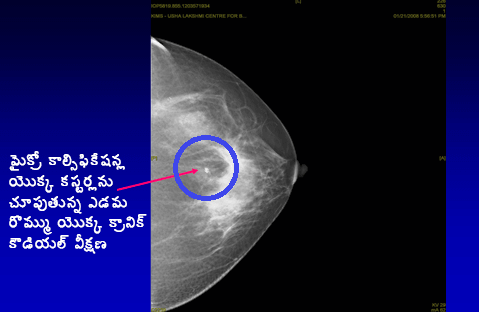
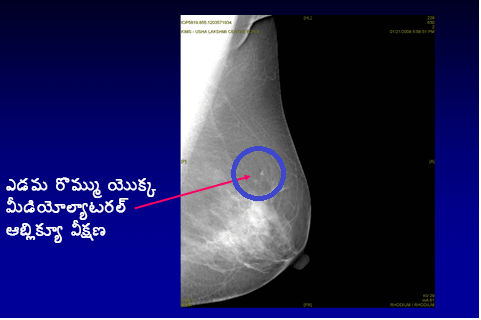

మామోగ్రామ్ అంటే ఏమిటి?
రొమ్ములో కణతి/ రొమ్ములో ఇటీవల మార్పులు గమనించిన వారికి మామోగ్రామ్ ( రొమ్ము యొక్క ఎక్స్రే) నిర్వహించబడుతుంది. స్పెషలిస్టు ద్వారా వివిధ క్లినికల్ రొమ్ము పరీక్షలు, మామోగ్రామ్ మరియు రొమ్ము యొక్క ఆల్ట్రాసౌండ్ ద్వారా రొమ్ములోని సమస్యను గుర్తించవచ్చు
డాక్టర్.. నాకు కణితి ఉన్నట్లుగా అనిపించడం లేదు నేను మామోగ్రామ్ ఎందుకు చేయించుకోవాలి?
మామోగ్రామ్ స్క్రీనింగ్ అంటే ఏమిటి?
స్త్రీ లేదా డాక్టరు ఇద్దరు కూడా రొమ్ములో కణిత ఉన్నదని గుర్తించలేని స్థితిలో రొమ్ము క్యాన్సర్ గుర్తించడం కొరకు మామోగ్రామ్( రొమ్ము యొక్క ఎక్స్రే) నిర్వహిస్తారు. 40 సంవత్సరాల తరువాత ప్రతి సంవత్సరం ఒక్కసారి మామోగ్రామ్ చేయించుకోవాలని సలహా ఇవ్వబడుతోంది.
మామోగ్రఫీ( రొమ్ము యొక్క ఎక్సరే) ద్వారా రొమ్ముస్క్రీనింగ్ చేయడం అనేది అనేక సంవత్సరాల ముందు రొమ్ము క్యాన్సర్ గుర్తించడంలో రుజువు చేయబడ్డ ఒక సమర్థవంతైన మార్గం. రొమ్ము క్యాన్సర్ ముందస్తుగా గుర్తించడం వల్ల రొమ్ము క్యాన్సర్కు విజయవంతంగా చికిత్స అందించవచ్చు, ఇది జీవించే అవకాశాలను గణనీయంగా పెంపొందిస్తుంది.




రొమ్ము క్యాన్సర్ స్క్రీనింగ్ అనేది అన్ని వయస్సు గ్రూపుల వారికి సమర్థవంతమైనదా?
అన్ని వయస్సులవారీగా ‘రొమ్ము అవగాహన’ అనే ఎంతో ముఖ్యమైనది, 40 సంవత్సరాలు పైబడిన వారికి రొమ్ము స్క్రీనింగ్ అనేది ఎంతో సమర్థవంతమైనది. ఎలాంటి రోగలక్షణాలు లేనప్పుడు 40 సంవత్సరాలు కంటే తక్కువ వయస్సు ఉన్న మహిళలకు రోటీన్ రొమ్ము స్క్రీనింగ్ సమర్థవంతం అని రుజువు చేయబడలేదు.
మామోగ్రామ్ చేయించుకోవడం సురక్షితమా? దీని వల్ల రేడియేషన్ ప్రమాదం జరుగుతుందా?
మామోగ్రామ్ చేయించుకోవడం చాలా సురక్షితం మామోగ్రామ్లో చిన్న మోతాదులో రేడియేషన్ ఉంటుంది- దీనివల్ల ఆరోగ్యానికి ఎలాంటి ముప్పు వాటిల్లదు. మామోగ్రాఫీలో సమయంలో డెలివరీ అయ్యే రేడియేషన్ మోతాదు డెంటల్ ఎక్స్రే సమయంలో అందుకునే దానికి సమానంగా ఉంటుంది.
మామోగ్రామ్ నొప్పిగా ఉంటుందా?
మామోగ్రామ్ వల్ల చలన అసౌకర్యం కలగవచ్చు, సరిగ్గా శిక్షణ పొందిన రేడియోగ్రాఫర్ ద్వారా చేయబడినట్లయితే ఎలాంటి నొప్పి ఉండదు. డిజిటల్ మామోగ్రామ్ ద్వారా, ఈ అసౌకర్యం మరింత తక్కువగా ఉంటుంది.
సంప్రదాయ మామోగ్రామ్ మరియు డిజిటల్ మామోగ్రామ్ మధ్య తేడా ఏమిటి?
ఫుల్ ఫీల్డ్ డిజిటల్ మామోగ్రఫీ అనేది ఇటీవల చోటు చేసుకున్న ఒక విప్లవత్మక మార్పు, కేవలం ఐదు సెకండ్ల వ్యవధిలో రొమ్ము యొక్క ఇమేజ్ని అందిస్తుంది( సంప్రదాయ మామోగ్రఫీలో నాలుగు నుంచి ఐదు నిమిషాలు పడుతుంది) సూక్ష్మ రొమ్ము క్యాన్సర్ మార్పులను ముందస్తుగా గుర్తించడానికి మరియు సాంద్రమైన రొమ్ములు ఉండే యువతలో స్టాండర్డ్ మామోగ్రఫీతో పోలిస్తే ఈ కొత్త టెక్నిక్ ఎంతో సమర్థవంతమైనది. సంప్రదాయ మామోగ్రఫీతో పోలిస్తే తక్కువ అసౌకర్యం మరియు తక్కువగా రేడియేషన్ ప్రభావానికి గురికావడం ఇతర ప్రయోజనాలుగా చెప్పుకోవచ్చు. అన్నింటికి మించి అత్యంత కచ్చితత్త్వం కలిగి ఉంటుంది.
అన్నింటిని మించి, టెలిమెడిసిన్ సదుపాయాల లభ్యతతో, డిజిటల్ ఇమేజ్ను సెకండ్ ఒపీనియన్ కొరకు ప్రపంచంలో ఎక్కడికైనా పంపవచ్చు. మెషిన్ ఎంతో ఖరీదైనది కనుక, భారతదేశంలో ఫుల్ ఫీల్డ్ డిజిటల్ మామోగ్రఫీ విస్త్రృతంగా ఉపయోగించడం లదు.
రొమ్ము క్యాన్సర్ గుర్తించడంలో మామోగ్రఫీ 100% కచ్చితమైనదా?
రొమ్ము క్యాన్సర్ని ముందుగా గుర్తించడానికి మామోగ్రామ్ అనేది ఒక సమర్థవంతమైన మార్గం. ఇతర స్క్రీనింగ్ టెస్ట్ల తరహాలోనే ఇది కూడా కచ్చితమైనది కాదు. మామోగ్రామ్ యొక్క కచ్చితత్త్వం సుమారు 85% ఉంటుంది, దీనికి కారణం.
రొమ్ము యొక్క MRI కొరకు పాత్ర ఏమిటి?
రొటీన్ రొమ్ము స్క్రీనింగ్ లేదా రొమ్ము క్యాన్సర్తో ప్రతి రోగిని మదింపు చేయడంలో రొమ్ము MRI సిఫారసు చేయబడదు.
అయితే, కొన్ని నిర్ధిష్ట పరిస్థితల్లో ఈ మదింపు ఎంతో ఉపయోగకరంగా ఉంటుది.